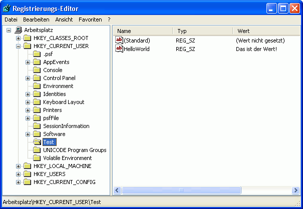
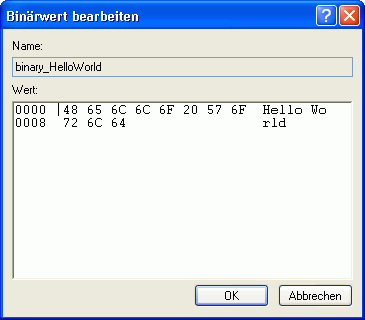

Bearbeiten der Registry
Mit der Version 5.0 ermöglicht RapidBATCH nun auch erstmals das direkte Bearbeiten der Windows-Registry. Die Registry ist eine mit Windows 95 eingeführte Datenbank, welche ein fester Bestandteil der Windows-Betriebssystemreihe geworden ist. Der hauptsächliche Zweck der Registry besteht darin, Konfgurationswerte und individualisierende Schalter für Programme abzulegen bzw. sogar benutzerorientiert zu speichern. Auch Informationen über Dateiendungstypen sowie alle nur erdenklichen Systemeinstellungen sind in der Registry hinterlegt. Damit entfällt auch die Vermüllung der Festplatte durch Konfigurations- und INI-Dateien fast gänzlich.
Editiert und betrachtet werden kann die Registry mit dem Windows-eigenen Werkzeug "regedit", welches bei jeder Windows-Version mitgeliefert wird.
Die Registry ist ähnlich dem Dateisystem von Windows aufgebaut, wobei es 5 so genannte Hauptschlüssel gibt. Ein Registrierungsschlüssel ist eine Art "Ordner" in der Registry, und kann theoretisch gesehen unendlich viele Unterschlüssel haben. In jedem Schlüssel können zusätzlich eine unbegrenzte Anzahl von Werten abgelegt werden, welche einen Namen und den ensprechend hinterlegten Wert haben.
Folgend eine Auflistung der 5 Hauptschlüssel und deren Bedeutung. - HKEY_CLASSES_ROOT
Hier werden Informationen über die verschiedenen Dateitypen gespeichert. Darunter fallen die Beschreibung, das Symbol und die verknüpfte Anwendung. - HKEY_CURRENT_USER
Hier werden Einstellungen und Informationen zu Software gespeichert, die nur für den aktuellen Windows-Benutzer gelten. - HKEY_LOCAL_MACHINE
Hier werden von allen Benutzern geteilte Einstellungen und Informationen gespeichert. - HKEY_USERS
Enthält den Stamm aller Benutzerprofile auf dem Computer. - HKEY_CURRENT_CONFIG
Grundlegende Einstellungen des Betriebssystemes.
Mit RapidBATCH lässt sich die Registry nun zunutze machen. Ob man nun via RapidBATCH bestehende Registry-Werte automatisiert verändert, um z.B. das Verhalten einer Software zu ändern oder zu bestimmen oder selbst einen eigenen Schlüssel für sein Script anlegt, um dort beispielsweise benutzerdefinierte Einstellungen und Schalter zu speichern, ist jedem selbst überlassen. Natürlich kommt es immer ganz auf den Zweck des jeweiligen Scripts an.
Zum Erstellen und Entfernen von Schlüsseln stellt RapidBATCH die Anweisungen NEWREGKEY und DELREGKEY zur Verfügung. NEWREGKEY erstellt einen Unterschlüssel, DELREGKEY entfernt einen Schlüssel samt Unterschlüssel und Werten aus der Registry.Als Parameter erwarten beide Anweisungen zuerst den Bezeichner des Hauptschlüssels, welcher durch die Werte 'CLASSES_ROOT', 'CURRENT_CONFIG', 'CURRENT_USER', 'LOCAL_MACHINE' und 'USERS' spezifiziert wird, sowie den Pfad des neu zu erstellenden Schlüssels. Folgendes Script erzeugt einen Schlüssel unter HKEY_CURRENT_USER mit dem Namen "Test".
rem Einen neuen Schlüssel erstellen
newregkey 'CURRENT_USER', 'Test'
if [errorcode] = '0'
echo 'Erstellen von HKEY_CURRENT_USER\Test war erfolgreich.'
else
echo 'Fehler beim Erstellen von HKEY_CURRENT_USER\Test.'
endif
rem Einen existierenden Schlüssel entfernen
delregkey 'CURRENT_USER', 'Test'
if [errorcode] = '0'
echo 'Löschen von HKEY_CURRENT_USER\Test war erfolgreich.'
else
echo 'Fehler beim Entfernen von HKEY_CURRENT_USER\Test.'
endif
Wichtig beim Erstellen eines Schlüssels ist, dass die nächsthöhere Ebene des zu erstellenden Schlüssels bereits existiert, d.h. es besteht hier keine Äquivalenz zu MKDIR.
Um nun einen Wert in den Schlüssel selbst zu schreiben oder dem Schlüssel einen Wert hinzuzufügen bietet RapidBATCH die Anweisung LETREGKEY. LETREGKEY unsterstützt dabei drei unterschiedliche Datentypen ("String", "Binary" und "Long" (DWORD)), die sich als Werte in der Registry ablegen lassen. Desweiteren erwartet die Anweisung den Hauptschlüsselnamen, den Schlüsselpfad, den Wertnamen sowie den zu setzenden Wert in der je nach Datentyp angegebenen Form. Folgendes Beispiel erzeugt einen neuen Wert "HelloWorld" im Schlüssel "Test" unter "HKEY_CURRENT_USER" (der Schlüssel wird hier vorher auch nochmal mit NEWREGKEY angelegt).
rem Testschlüssel anlegen
newregkey 'CURRENT_USER', 'Test'
if [errorcode] = '0'
rem Wert in Registry schreiben
letregval 'string', 'CURRENT_USER', 'Test', 'HelloWorld', 'Das ist der Wert!'
rem War das Schreiben des Wertes erfolgreich?
if [errorcode] = '0'
echo 'Schreiben der Registry war erfolgreich!'
else
echo 'Fehler beim Schreiben der Registry'
endif
endif

Erfolgreich geschriebener Wert in der Registry.
Es kann auch ein Wert direkt in den Schlüssel geschrieben werden; Hier lässt man einfach den Parameter für den Registry-Wertnamen leer.
letregval 'string', 'CURRENT_USER', 'Test', '', 'Das ist der Wert!'
Um einen Binärwert zu schreiben, wird bei der LETREGVAL genauso verfahren wie bei PUTFILE: Eine Liste an ASCII-Zeichencodes, bei der jeder Wert zwischen 0 und 255 liegen kann, also 8 Bit je Zeichen. Hier ein "Hello World" in binär:
rem Wert in Registry schreiben
[hello] = '72|101|108|108|111|32|87|111|114|108|100'
letregval 'binary', 'CURRENT_USER', 'Test', 'binary_HelloWorld', [hello]
rem War das Schreiben des Wertes erfolgreich?
if [errorcode] = '0'
echo 'Schreiben der Registry war erfolgreich!'
else
echo 'Fehler beim Schreiben der Registry'
endif

Ein deutlich erkennbares "Hello World" wurde binär in die Registry geschrieben!
Soll ein DWORD-Wert in die Registry geschrieben werden, können nur numerische 32-Bit Ganzzahlwerte in die Registry geschrieben werden.
Das Auslesen von Registry-Werten erfolgt auch hier wieder äquivalent über eine Funktion namens GETREGVAL. Parameter sind hier die selben wie bei LETREGVAL, nur dass hier natürlich kein Wert, dafür aber eine Rückgabevariable angegeben werden muss.
Dieses Beispiel liest die oben geschriebenen Werte wieder aus der Registry aus:
rem Stringwert aus Registry lesen
getregval [text] = 'string', 'CURRENT_USER', 'Test', 'HelloWorld'
echo 'Stringwert in "HelloWorld": ' # [text]
rem Binärwert aus Registry lesen
getregval [data] = 'binary', 'CURRENT_USER', 'Test', 'binary_HelloWorld'
echo 'Gelesene ASCII-Liste aus "binary_HelloWorld": ' # [data]
rem ASCII-Codes in ASCII-Zeichen umwandeln und an Ausgabestring hängen
[i] = '0'
repeat
[i] + '1'
gettok [zeichen] = [data], [std_sep], [i]
if [zeichen] ! ''
getchr [zeichen] = [zeichen]
[klartext] # [zeichen]
endif
until [zeichen] = ''
rem Den Klartext ausgeben
echo 'Klartext aus "binary_HelloWorld": ' # [klartext]
Zu guter Letzt entfernen wir noch die geschriebenen Werte mit Hilfe der DELREGVAL-Anweisung aus der Registy.
rem "HelloWorld" entfernen
delregval 'CURRENT_USER', 'Test', 'HelloWorld'
if [errorcode] ! '0'
echo 'Fehler beim Löschen von "HelloWorld"'
endif
rem "binary_HelloWorld" entfernen
delregval 'CURRENT_USER', 'Test', 'binary_HelloWorld'
if [errorcode] ! '0'
echo 'Fehler beim Löschen von "binary_HelloWorld"'
endif
Copyright © 2000-2006 by J.M.K S.F. Software Technologies, Jan Max Meyer
All rights reserved.